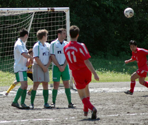
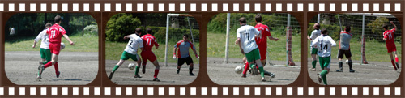
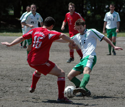

|
OiFuto 1, Sunday 29th April, The pitch was waterlogged but the weather was beautiful enough to offset the mud at Oifuto on Sunday. A nearly full strength Swiss team had gathered to do battle with the Celts who appeared to be missing a few key players. It is an unusual luxury for a Swiss team that has struggled for consistency in lineups and form this year.
The team’s motivation was weakened slightly at the beginning knowing the BFC had squeaked out a win against table trawlers Jetro the previous day but 2nd place still sounds a lot better than the lesser alternative. It was an open game from the start, both teams found it surprisingly easy to move the ball on the heavy pitch. The Swiss were getting long balls over the top to eager runners while the Celts were working it through the middle with some success. The first goal of the day came about 15 minutes in with Dave P. being put through 1 on 1 vs. his defender, he turned inside of him nicely and fired a solid shot into the lower left hand corner from 25 yards out.
The Swiss started to try some fancy things with Aoki making some nice runs and Kai coming through the midfield – unfortunately, few moves produced good chances, Karl had a nice shot that hit the right post and bounced across the goal mouth. Meanwhile the Celts were picking the ball up in midfield and sending in some dangerous balls but the Swiss defense of Raffa, Shio, Graeme, and Andy were soaking it up and in some cases, clearing just at the last minute. The 2nd goal of the half ended up coming from a free kick for the Swiss when Miles was hacked down just outside the penalty area. Kirk had a look and decided to try for the far post, he struck a swerving shot that looked to be headed well wide but it swerved back in (thank you Adidas) and even though the keeper got a hand on it, it went into the upper right corner.

The Celts had 2 clear chances right after that with 2 nice crosses but the Swiss were fortunate on both occasions as their attackers (don’t even try to take credit for these) smacked a header wide and then managed to clear the rugby posts from 10 yards out on the 2nd in spite of being in the clear. The first half ended at 2-0 and it was a pretty entertaining game at that point.
Unfortunatly for the relegation battling Celts, the wheels came off in the 2nd half. They shifted a few players around, changed keepers, and for some reason the Swiss found their scoring boots. Dave got a second goal, JP scored directly from a corner kick, Kai got on the end of a header back into the box from Kirk, and Kirk managed to knock in two more making it a hat trick on the day. The Celts did score one amidst the waves with Peter (the Swiss keeper) managing to kick the ball in at the near post after some good pressure from the Celts #15 who worked tirelessly all day. The final score ended up at 7-1, the biggest result of the year for the Swiss and probably a day for the Celts to say – “where were the players who helped us beat the YCAC last week?” Unfortunately, there isn’t much sympathy from the other teams as all of us have been through the issue of long travel times and a lack player availability. That is the TML.
Report by Cap'n Kirk.
|